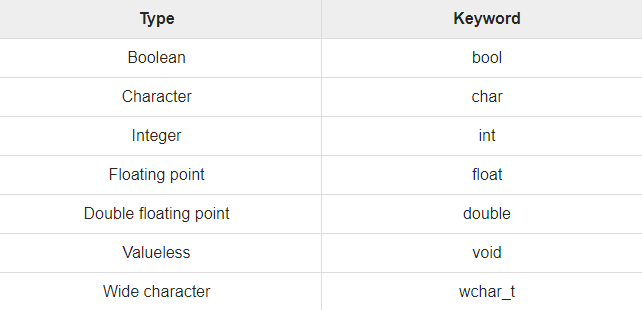

Comparing Datatypes
source Tutorials point
While writing program in any language, you need to use various variables to store various information. Variables are nothing but reserved memory locations to store values. This means that when you create a variable you reserve some space in memory. You may like to store information of various data types like character, wide character, integer, floating point, double floating point, boolean etc. Based on the data type of a variable, the operating system allocates memory and decides what can be stored in the reserved memory.
Primitive Built-in Types
C++ offers the programmer a rich assortment of built-in as well as user defined data types. Following table lists down seven basic C++ data types −
Several of the basic types can be modified using one or more of these type modifiers
−
• signed
• unsigned
• short
• long
The size of variables might be different from those shown in the above table, depending
on the compiler and the computer you are using.
Following is the example, which will produce correct size of various data types on your
computer.
This example uses endl, which inserts a new-line character after every line
and << operator is being used to pass multiple values out to the screen. We are also
using sizeof() operator to get size of various data types.
When the above code is compiled and executed, it produces the following
result which can vary from machine to machine −
typedef Declarations
You can create a new name for an existing type using typedef. Following is the simple syntax to define a new type using typedef −
For example, the following tells the compiler that feet is another name for int −
Now, the following declaration is perfectly legal and creates an integer variable called distance −
Enumerated Types
An enumerated type declares an optional type name and a set of zero or more
identifiers that can be used as values of the type. Each enumerator is a constant
whose type is the enumeration.
Creating an enumeration requires the use of
the keyword enum. The general form of an enumeration type is −
Here, the enum-name is the enumeration's type name. The list of names is comma
separated.
For example, the following code defines an enumeration of colors called colors and
the variable c of type color. Finally, c is assigned the value "blue".
By default, the value of the first name is 0, the second name has the value 1, and the third has the value 2, and so on. But you can give a name, a specific value by adding an initializer. For example, in the following enumeration, green will have the value 5.